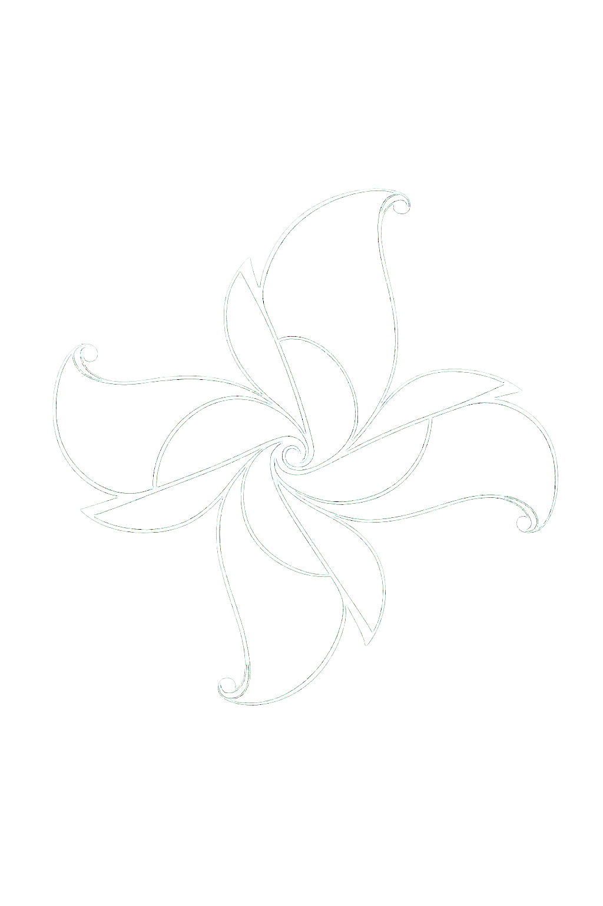

A movement practice rooted in circles, rhythm, breath, and return.
Every motion extends outward and comes back to center. Energy flows like water — never forced, never trapped, always able to move again.
This is not a performance practice. There is no competition here, no correct body, no prior training required.
Many people find that their bodies already know something about circular movement — from dance, from childhood, from the way water moves, from the way grief or joy moves through them when they let it.
Whatever pulse feeds your movement, it belongs here.
A circular practice for moving anger, grief, and pressure through the body safely — with rhythm, breath, and return. A strong current within the practice. Presence over intensity. Return over force.
The same principles held in Spanish language and Latin rhythm. Una práctica de movimiento circular — adaptable, abierta, en crecimiento.
Gentler sequences, classroom practices, elder forms, and cultural adaptations will emerge over time through dialogue and lived experience.
Start with curiosity.
Move slowly.
Let the circles teach the body.
You can begin anywhere. There is no entrance exam, no prerequisite, no moment you must wait for. Just a practice, open and returning — like the motion itself.